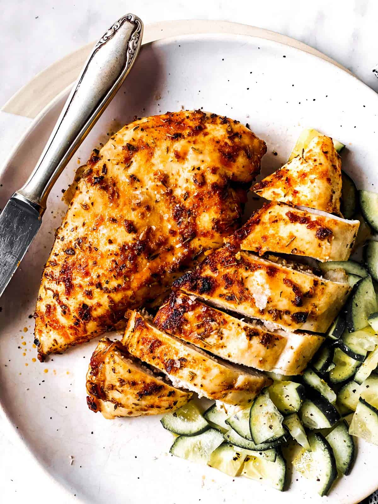

Chicken Breast

Description
Okay, if you're here after reading my fried rice recipe, you know that I mentioned that I will eat that with chicken breast as a post workout meal. I'm gonna show you how to make that now so you can have a filling, high protein meal. :)
Ingredients
- Chicken Breast (4 oz. at the minimum)
- Salt
- Pepper
- Garlic Powder
- Any other spices you might want to try
- Vegetable Oil
Steps
- Make sure your chicken breast is an even thickness throughout so it cooks evenly. If it's not, smash that thing down with a tenderizer or a frying pan.
- Season up your chicken with the salt, pepper and garlic powder.
- Heat up a pan to medium/medium-low heat. Once it's hot, lay your chicken flat in the pan.
- Let it cook for about 5-8 minutes both sides. If you have a cooking thermometer (you should), the chicken's internal temperature should be 165 degrees fahrenheit.
- Remove chicken from pan. Let it rest for a few minutes then slice it up. Or don't if you just wanna eat it like a chicken strip or whatever.
- And you are good to go! Serve it up with a side of your choice or just eat it by itself and enjoy! <3